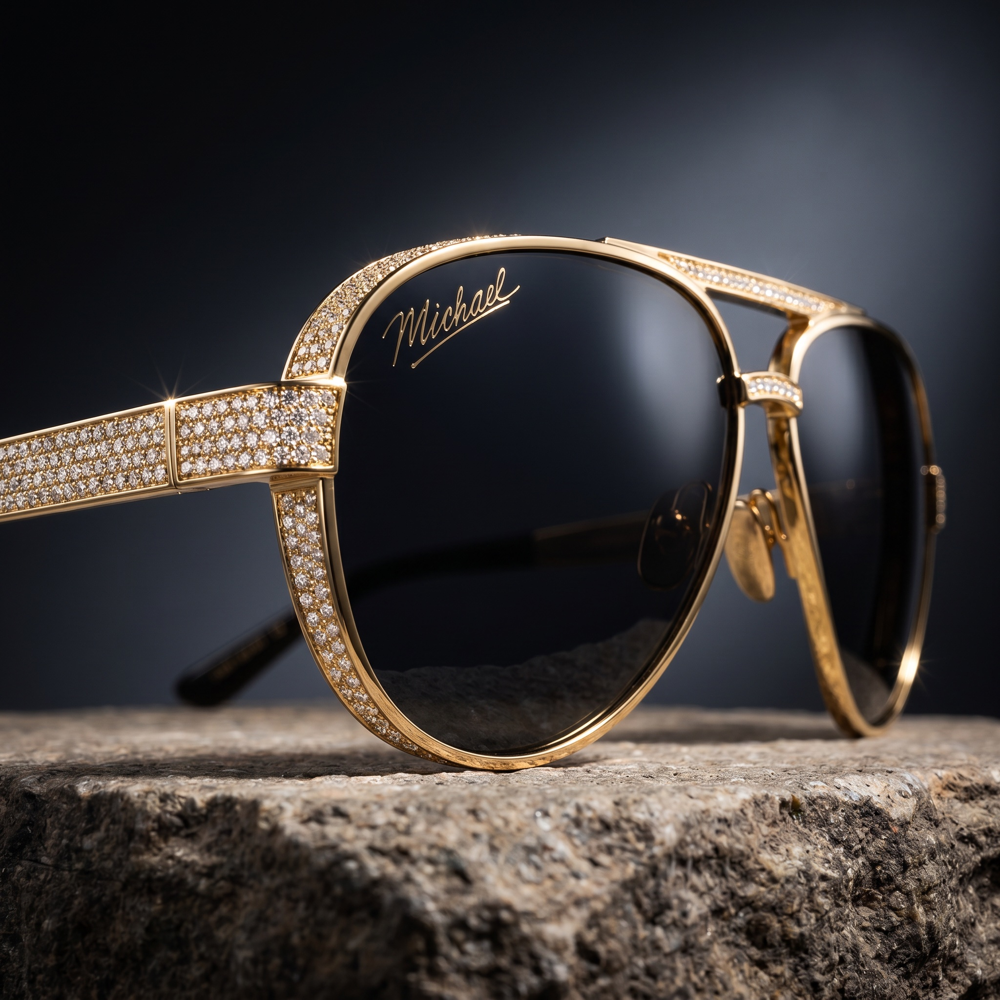

Le process complet derrière la campagne fictive — du concept de marque jusqu'au visuel final photoréaliste. Méthode, prompts et outils utilisés.
Imaginer une marque qui n'existe pas, et la rendre crédible en quelques visuels — c'est l'exercice le plus parlant pour montrer ce que la direction artistique IA permet aujourd'hui. Pas de produit physique. Pas de modèle. Pas de studio. Juste une vision, des références, et les bons prompts.
Avant tout, le concept. Michael Jackson Eyewear, 2026 : une ligne de lunettes ultra-luxe, gold + diamond pavé, héritage scénique. Je définis le ton (luxe, iconique, intemporel), le placement marché (haute joaillerie + héritage pop), les codes visuels.
Je rassemble des références : campagnes Cartier, Tom Ford, Bvlgari, photos de scène iconiques de MJ, lumières studio dramatiques. L'objectif : un univers cohérent qui mélange luxe contemporain et nostalgie scénique.
Une campagne, ce n'est pas une seule image. Je casse le concept en visuels complémentaires : un détail produit (matière + craftmanship), une vue hero (le produit en scène), un portrait humain (la signature). Chaque visuel raconte une partie de l'histoire.
Pour ce type de visuel ultra-luxe, la précision est tout : lumière directionnelle, matières (gold poli, micro-pavé diamant, lentille noire glossy), composition, color grading, imperfections naturelles (micro-rayures, poussière, lens flare). Si tu sautes un de ces points, l'IA donne un rendu plastique.
Génération dans Weavy, puis retouches manuelles image par image pour garantir la cohérence des reflets, des ombres, et la lisibilité de la signature gravée sur le verre. C'est ce dernier passage qui fait la différence entre "image IA" et "campagne luxe".
Clique sur « voir le prompt » pour déplier et copier celui que tu veux tester.
Ultra-luxury aviator sunglasses inspired by a legendary pop icon aesthetic, oversized teardrop silhouette with deep black lenses, polished gold frame structure, thick bold temples fully encrusted with dense micro-diamond pavé, high jewelry craftsmanship, stage-level extravagance Composition & Form: editorial product close-up, 85mm lens, shallow depth of field, 3/4 angled perspective, sunglasses resting on textured stone surface, slightly tilted for dynamic composition, tight framing emphasizing left lens and temple Lighting & Environment: dramatic studio lighting, hard rim lighting to ignite diamond sparkle, controlled specular highlights across gold frame, soft spotlight reflections on lenses, dark cinematic gradient background, luxury campaign atmosphere Materiality & Realism: polished gold metal with subtle micro-abrasions, ultra-detailed diamond pavé with multi-faceted reflections, deep black lenses with premium optical coating, engraved signature-style logo integrated directly onto the lens surface, inspired by elegant handwritten cinematic script (flowing cursive, gold metallic finish, slightly raised or laser-etched look, perfectly following lens curvature, subtle reflective interaction with light, not flat printed) Mood & Uncontrolled Signatures: iconic, bold, performance-driven luxury, subtle lens flares, micro dust in air, chromatic aberration on highlights, reflective bloom on diamonds, slight optical distortion, tactile realism Styling Overlay: high-end fashion campaign, cinematic grading, deep blacks, rich gold highlights, high dynamic range, ultra sharp, 8K photorealism, luxury eyewear advertisement aesthetic --no cheap look, plastic materials, flat logo print, low detail, blur, distorted proportions, text artifacts, watermark

Ultra-luxury aviator sunglasses, iconic pop legend inspired aesthetic, oversized teardrop silhouette, deep black lenses with glossy finish, polished gold frame, thick bold temples fully encrusted with dense micro-diamond pavé, high jewelry craftsmanship, statement design Composition & Form: front-facing hero shot, perfectly centered symmetrical composition, both lenses fully visible, 85mm lens, shallow depth of field, eye-level low angle close to floor, sunglasses resting directly on a vintage wooden dance floor, arms slightly open and visible, balanced framing, strong product presence, cinematic stillness Lighting & Environment: warm directional spotlight from upper side, creating symmetrical elongated shadows on wooden floor, subtle rim lighting outlining frame and diamonds, controlled reflections on both lenses, low-key ambient environment, moody stage-like atmosphere, soft falloff into darkness Materiality & Realism: polished gold with micro-scratches, ultra-detailed diamond pavé with sharp multi-point reflections, deep black lenses with premium optical coating, engraved gold handwritten signature-style logo integrated on one lens, realistic wood parquet floor with visible grain, slight wear, micro dents, satin varnish reflections Mood & Uncontrolled Signatures: iconic, bold, stage nostalgia, subtle dust particles in air, faint lens flare, chromatic aberration on highlights, reflective bloom on diamonds, controlled cinematic tension, luxury stillness Styling Overlay: editorial luxury campaign, cinematic color grading, warm amber highlights on wood, deep blacks, high dynamic range, film-inspired tone, ultra sharp 8K photorealism --no asymmetrical framing, no tilted composition, no plastic look, no cheap materials, no flat lighting, no modern floor, no low detail, no blur, no distorted proportions, no watermark
Close-up portrait of an iconic pop-inspired male figure wearing ultra-luxury aviator sunglasses, confident and mysterious expression, head slightly tilted downward, eyes hidden behind deep black lenses, subtle tension in jawline, timeless performer aura Composition & Form: tight portrait framing, 85mm lens, eye-level slightly above, shallow depth of field, focus locked on sunglasses and facial structure, subject angled 3/4, intimate editorial crop, shoulders partially visible Lighting & Environment: dramatic Rembrandt lighting, strong directional key light from side, soft shadow triangle on cheek, subtle rim light outlining hair and shoulders, low-key cinematic background, stage-inspired atmosphere fading into darkness Materiality & Realism: polished gold aviator frame with micro-abrasions, thick diamond-encrusted temples catching sharp highlights, deep black lenses with premium reflective coating, engraved gold handwritten signature-style logo integrated on lens surface, subtle reflections of environment in lenses Human Detail: hyperrealistic skin texture, visible pores, fine peach fuzz, slight oil sheen on forehead and nose, subtle skin translucency, natural asymmetry, faint under-eye texture, realistic lip texture, detailed hair strands slightly tousled, natural imperfections Mood & Uncontrolled Signatures: iconic, controlled intensity, silent charisma, micro dust in air catching light, subtle lens flare, chromatic aberration on highlights, soft bloom around specular reflections, cinematic grain, analog imperfection feel Styling Overlay: luxury fashion editorial, cinematic color grading, deep blacks, warm highlights on skin and gold, high dynamic range, ultra-detailed 8K realism, timeless icon aesthetic --no cartoon look, no exaggerated features, no plastic skin, no over-smoothing, no distortion, no watermark
Je crée des campagnes IA premium pour les marques e-commerce qui veulent se démarquer. Réservez un appel découverte gratuit de 30 minutes.
Prendre rendez-vous →